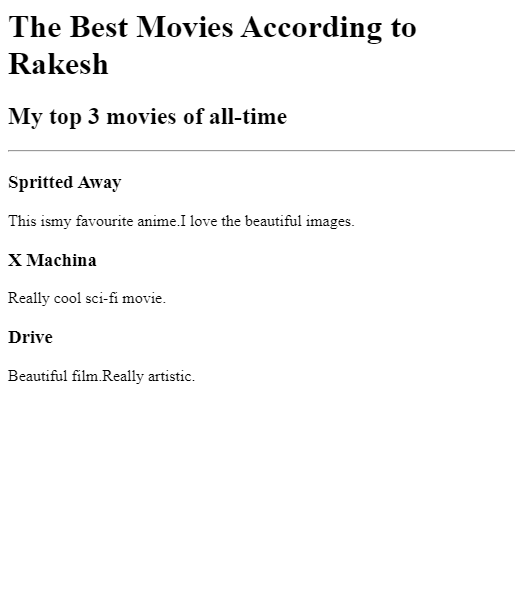
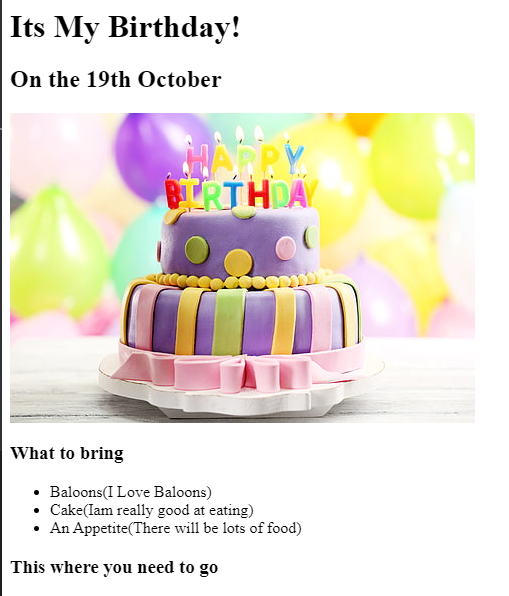

<!-- TODO 1: Create the HTML Boilerplate -->

<!-- TODO 2: Add Your previous projects' HTML into the public folder -->

<!-- TODO 3: Take screenshots of your project previews and add the images to the images folder -->

<!-- TODO 4: Add titles/subtitles etc. -->

<!-- TODO 5: Add a link to the project pages -->

<!-- TODO 6: Add images to show the project previews
HINT for TODO 6: You can use the height attribute set to 200 to make the image smaller:
https://developer.mozilla.org/en-US/docs/Web/HTML/Element/img#attr-height -->

<!-- TODO 7: Add the Contact Me and About Me page links -->
<h1>Rakesh Saranu's Portfolio</h1>
<h2>Iam a Web Developer</h2>
<hr size="5" noshade>
<h3><a href="./public/project-1.html">MOVIE RANKING PROJECT</a></h3>

<h3><a href="./public/project-2.html">BIRTHDAY INVITE PROJECT</a></h3>

<hr size="5" noshade>
<a href="./public/about.html">ABOUT ME</a>
<a href="./public/contact.html">CONTACT ME</a>